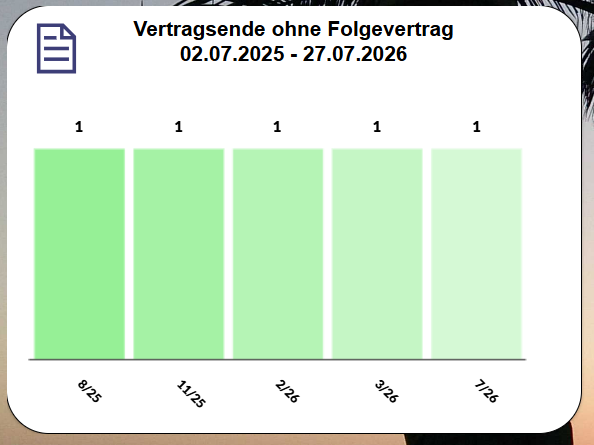
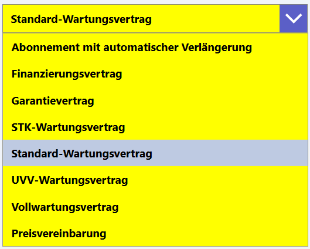
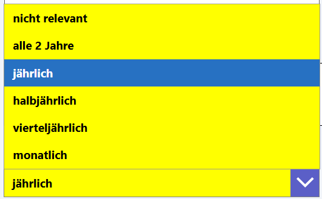

Benutzerhandbuch
pobvol Service Solution
Power App pssService Board
Stand: 9'25
Deutsch /
English
Benutzerhandbuch
pobvol Service Solution
Power App pssService Board
Stand: 9'25
Deutsch /
English
Vertragsdaten benötigt die Lösung nur dann, wenn Serviceleistungen abgerechnet werden sollen.
Dazu muss Ihr App-Admin die Standardpreise für Serviceleistungen hinterlegen und davon abweichende Preisvereinbarungen in der Power App pssService Board erfassen.
Gespeichert werden die Vertragsdaten in den SharePoint-Listen (SP-Listen) "Servicevertraege" und "ServicevertraegeP".
Anzahl Serviceverträge
Chart: Vertragsende ohne Folgevertrag
Die Vertragsübersicht
Die Vertragsdaten
Einen Servicevertrag hinzufügen
Ein Vertragsdokument (PDF) hinzufügen
Top ↑
Der StartScreen der App pssService Board zeigt im Bereich "Stammdaten" die Anzahl der hinterlegten Serviceverträge an.
Ein Klick auf diesen Container öffnet den Screen "Serviceverträge". Die Vertragsübersicht mit der Detailanzeige wird eingeblendet.
Top ↑
Der StartScreen der App pssService Board zeigt im Bereich "Serviceverträge" in einem Chart die monatliche Zahl an Verträgen, die in dem Monat auslaufen. Diese Verträge sollten von einem App-Admin überprüft werden.
Ein Klick auf einen Monat des Charts öffnet den Screen "Serviceverträge". Die Vertragsübersicht mit der Detailanzeige wird eingeblendet. Gelistet werden Verträge, die in dem gewählten Monat auslaufen.
Top ↑
Um die Liste zu filtern, einfach einen Suchbegriff im Suchfeld eingeben. Es werden dann die Verträge angezeigt, bei denen der Suchbegriff gefunden wird. Überprüft werden dazu Kundennummer, Kundenname, Inventarnummer, Hersteller, Geräteart, Vertragsnummer und Vertragsart.
Mit einem Klick auf einen Eintrag werden die Vertragsdaten in der Detailansicht angezeigt.
Top ↑
Ein Klick auf das Vorschaubild öffnet das Dokument im PDF-Viewer. Mit einem Klick auf das X-Icon wechseln Sie zurück in die Anzeige der Vertragsdaten.
Top ↑
In der Power App pssService Board die Serviceverträge aufrufen. Dazu im Screen "Kundeninventar" im Container "Serviceverträge" das Icon "Verträge" aufrufen.

Hinzufügen wählen. Der Container "Vertrag hinzufügen" wird eingeblendet. Kunde und Kundeninventar sind vorbelegt.
Eine Vertragsart zuordnen. Zur Verfügung stehen folgende Vertragsarten:
Eine eindeutige Vertragsnummer wird vom System zugeordnet. Die vom System zugeordnete Nummer wird zusammengesetzt aus aktuellem Jahr, Monat, Tag, Stunde, Minute und Sekunde (bspw. 20250727125449). Die Nummer kann geändert werden.
Vertragslaufzeit-Anfang eingeben. Dazu das Startdatum und die Startuhrzeit festlegen.
Vertragslaufzeit in Monaten eingeben.
Das Ende der Vertragslaufzeit wird automatisch berechnet und eingetragen. Änderungen sind nicht möglich.
Das Kündigung bis-Datum wird ebenfalls automatisch berechnet und eingetragen. Dieses Datum liegt 30 Tage vor Vertragsende. Auch dieses Datum kann nicht geändert werden.
Wenn gewünscht, die automatische Verlängerung aktivieren.
Der Power Automate Flow "pobvol Service: Create follow-up contracts" prüft jeden Montag um 8 Uhr ob Verträge verlängert werden sollen. Ist die automatische Verlängerung aktiv und wurde der Vertrag vom Kunden nicht bis zum Kündigung-bis-Datum gekündigt, wird ein Folgevertrag erstellt. Die App-Admins werden darüber per E-Mail informiert.

Die Services markieren, die Teil des Vertrags sind und den vereinbarten Preis eintragen.
Die Servicearten sind abhängig von dem Gerätetyp (Flurförderzeuge, Fahrzeuge, etc.). Welche Servicearten angezeigt werden, hat Ihr Admin bei der Installation festgelegt.
Das Serviceintervall festlegen.
Zum Schluss "Daten speichern" wählen.
Top ↑
In der Vertragsanzeige das Icon "Ändern" aufrufen.
In der Änderungsanzeige herunterscrollen zu "PDF-Dokument in der SharePoint-Bibliothek speichern" und auf "PDF-Datei auswählen" klicken.
Im nächsten Dialog, die PDF-Datei auswählen, die hochgeladen werden soll. Sie können PDF-Dateien mit einer maximalen Größe von 10 MB hochladen!
Zum Schluss "Daten speichern" wählen. Sie sehen ein Vorschaubild des Vertragsdokuments in der Vertragsanzeige.